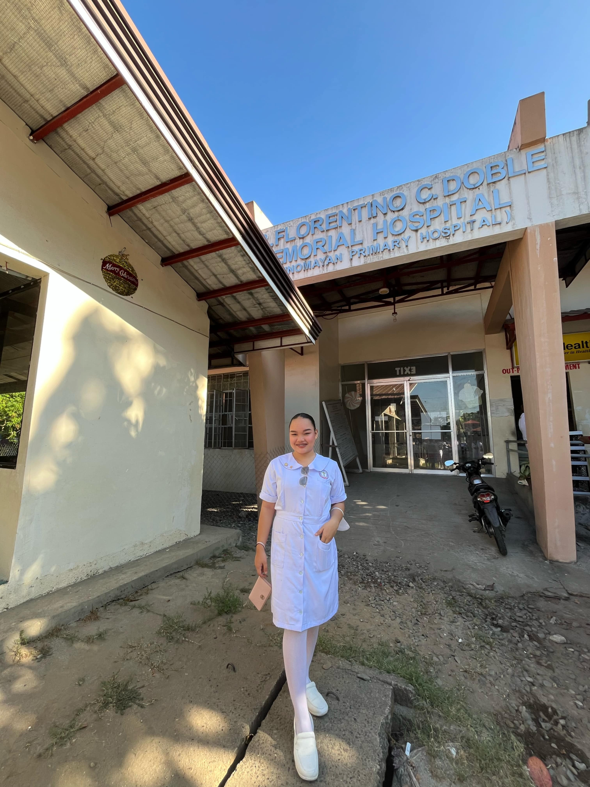

Hello! I am currently a nursing student pursuing my dream of becoming a registered nurse. Nursing has always been more than just a course for me—it's a calling to serve others and be part of their healing journey. So far, my journey has included studying challenging subjects such as Anatomy and Physiology, Pharmacology, and Maternal and Child Health. I've also experienced hands-on training in health centers, where I observed actual patient care, took vital signs, assisted with patient records, and interacted with real healthcare workers.
One of my most memorable experiences was observing how healthcare workers manage both patients and time efficiently. I’ve realized that being a nurse means being ready for anything—with heart, skill, and responsibility. As a student, I face struggles like managing time, passing difficult exams, and building confidence. But every step reminds me that I am learning something meaningful. I want to become a nurse who is not only skilled but also caring, respectful, and dependable.